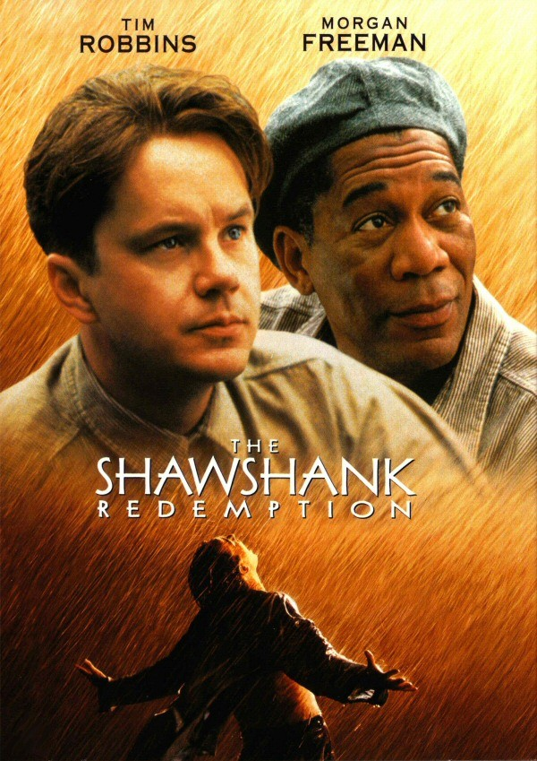
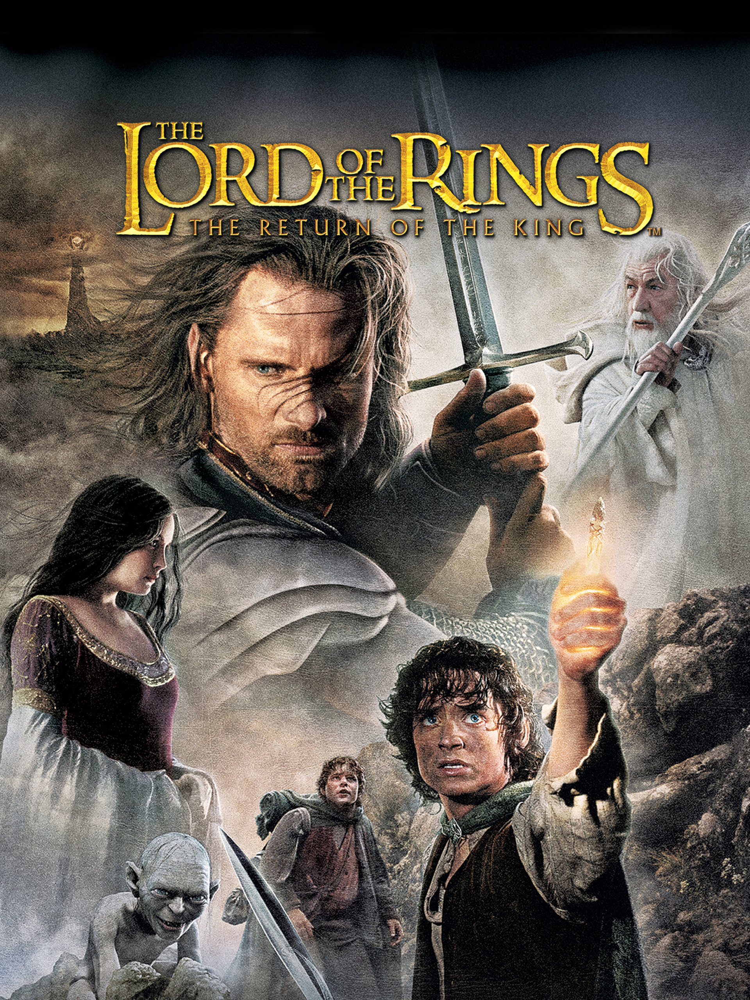
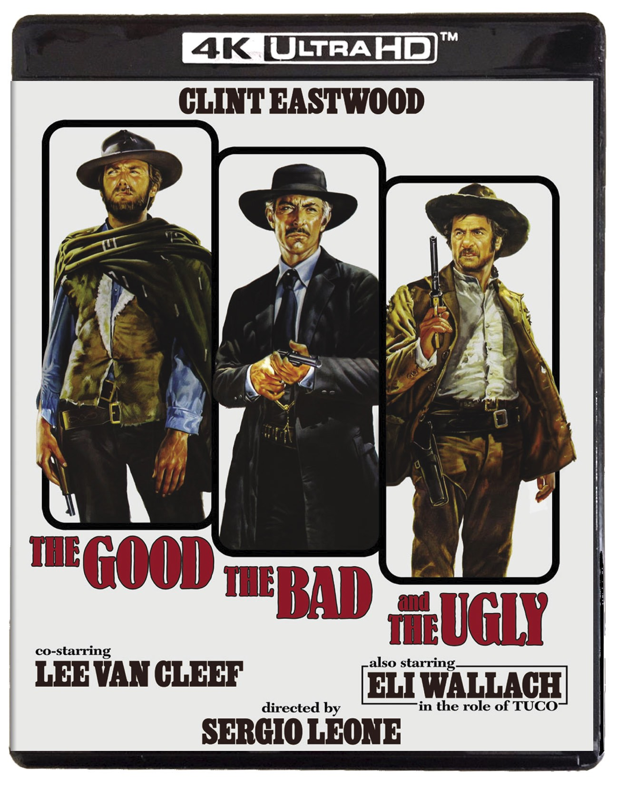

-
Esaretin Bedeli(1994)
Esaretin Bedeli, Frank Darabont'un senaryosunu yazdığı ve yönettiği, başrollerinde Tim Robbins ve Morgan Freeman'ın yer aldığı 1994 yapımı Amerikan dram filmidir.
 -
The Godfather (1972)
Don Corleone'nin kizi Connie'nin dügününde, ailenin en küçük oglu ve bir savas gazisi olan Michael babasiyla barisir. Bir suikast girisimi, Don'u artik isleri yönetemeyecek duruma düsürünce, ailenin basina Michael ve agabeyi Sonny geçer.

-
The Dark Knight (2008)
Kara Şövalye, Christopher Nolan'ın yönettiği bir süper kahraman filmidir. DC Comics'in kurgusal karakteri Batman'den uyarlanan 2005 tarihli Batman Başlıyor filminin devamıdır..

-
The Godfather 2 (1974)
Michael Corleone ise 1950'lilerde ailesinin islerini düzenlemek için Las Vegas, Hollywood ve Küba arasinda mekik dokumaktadir.

-
12 Angry Men (1957)
12 Öfkeli Adam, Sidney Lumet'in yönettiği 1957 ABD yapımı drama filmidir. Reginald Rose'un aynı adlı oyunundan uyarlanan film bir duruşmada bir jüri üyesinin diğer on bir jüri üyesini şüphelinin suçsuz olduğu konusunda, makul şüphe temelinde, ikna etme çabaları hakkındadır.

-
Schindler's List
Schindler'in Listesi, Steven Spielberg tarafından yönetilen ve üretilen ve Steven Zaillian tarafından yazılan 1993 Amerikan epik tarihi drama filmidir.

-
The Lord of the Rings: The Return of the King (2003)
Yüzüklerin Efendisi: Kralın Dönüşü, Peter Jackson'ın yönetmenliğini yaptığı, J. R. R. Tolkien'in Yüzüklerin Efendisi kitaplarının ikinci ve üçüncü bölümlerinden uyarlanan 2003 yılında gösterime giren fantezi filmidir.
 -
The Pulp Fiction (1994)
Ucuz Roman, Quentin Tarantino yönetmenliğindeki Roger Avary ile birlikte yazılmış, 1994 yapımı, kült kabul edilen bir filmdir. Ucuz Roman, En İyi Film dahil 7 dalda Oscar'a aday gösterilmiş ve En İyi Orijinal Senaryo Oscarı'nı almıştır.

-
The Lord of the Rings: The Fellowship of the Ring (2001)
Yüzüklerin Efendisi: Yüzük Kardeşliği, Peter Jackson'ın yönettiği Yüzüklerin Efendisi üçlemesinin birinci filmidir ve 2001 yılında gösterime girmiştir.

-
The Good, the Bad and the Ugly (1969)
İyi, Kötü ve Çirkin, 1966 yapımı Sergio Leone'nin yönettiği Italyan Spagetti Western filmidir. Başrollerini Clint Eastwood, Lee Van Cleef ve Eli Wallach paylaşmaktadır. Filmin hikâyesi Luciano Vincenzoni ve Sergio Leone tarafından, senaryosu ise Agenore Incrocci ve Furio Scarpelli tarafından yazılmıştır.
